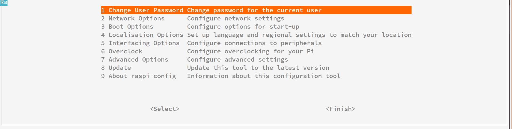
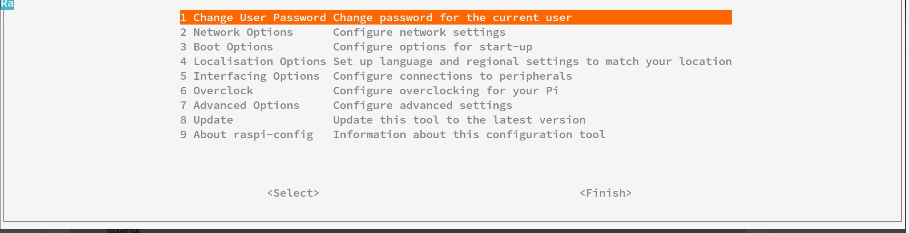

使用树莓派 3B 遇到的问题
树莓派挂载硬盘
# 查看系统上的文件系统的磁盘使用情况统计
df -h //
树莓派源的配置
- 修改
/etc/apt/sources.list命令
sudo apt update就是在这个文件里找软件源镜像站进行缓存更新
pi@raspberrypi:/etc/apt $ cat sources.list
# Uncomment line below then 'apt-get update' to enable 'apt-get source'
# 注释掉原来的软件源
#deb-src http://archive.raspbian.org/raspbian/ stretch main contrib non-free rpi
# 添加替换的软件源
deb http://mirrors.aliyun.com/raspbian/raspbian/ stretch main contrib non-free rpi
- 修改好文件后执行命令：
sudo apt update即完成软件源的替换了 - 常用软件源
中科大 deb http://mirrors.ustc.edu.cn/raspbian/raspbian/ jessie main contrib non-free rpi 清华 deb https://mirrors.tuna.tsinghua.edu.cn/raspbian/raspbian/ jessie main contrib non-free rpi 大连东软 deb http://mirrors.neusoft.edu.cn/raspbian/raspbian/ jessie main contrib non-free rpi 重庆大学 deb http://mirrors.cqu.edu.cn/raspbian/raspbian/ jessie main contrib non-free rpi 浙江大学 deb http://mirrors.zju.edu.cn/raspbian/raspbian/ jessie main contrib non-free rpi 阿里云 deb http://mirrors.aliyun.com/raspbian/raspbian/ jessie main contrib non-free rpi 搜狐 deb http://mirrors.sohu.com/raspbian/raspbian/ jessie main contrib non-free rpi 元智大学（中国台湾） deb http://ftp.cse.yzu.edu.tw/Linux/raspbian/raspbian/ jessie main contrib non-free rpi 新加坡国立大学 deb http://mirror.nus.edu.sg/raspbian/raspbian/ jessie main contrib non-free rpi 北陆先端科学技术大学院大学（日本知名镜像站，日常出口带宽2g） deb http://ftp.jaist.ac.jp/raspbian/ jessie main contrib non-free rpi 牛津大学 deb http://mirror.ox.ac.uk/sites/archive.raspbian.org/archive/raspbian/ jessie main contrib non-free rpi 美国Berkely大学 deb http://mirrors.ocf.berkeley.edu/raspbian/raspbian/ jessie main contrib non-free rpi 美国俄克拉荷马大学 deb http://reflection.oss.ou.edu/raspbian/raspbian/ jessie main contrib non-free rpi 南非知名软件源 deb http://mirror.liquidtelecom.com/raspbian/raspbian/ jessie main contrib non-free rpi 默认源（带重定向by mirrorbrain） deb http://mirrordirector.raspbian.org/raspbian/ jessie main contrib non-free rpi 官方源 deb https://archive.raspbian.org/raspbian/ jessie main contrib non-free rpi
ssh 登录，开启后台运行命
screen - 希望断开 ssh 即关闭 screen 内执行任务，当再次登录还能从上次任务结束出开始，不必重新执行
- 安装 screen :
sudo apt install screen - 开启一个后台：
screen -dmS xxx( 后台名字 ) - 暂时退出当前 screen :CTRL + a + d
- 显示已开启的后台：
screen -ls - 返回某一个后台“xxx” :
screen -r xxx
nohup - 即使断开 ssh 连接，使用 nohup 执行的任务仍然会在后台运行，非常适用于远程使用服务器下载
- 如果你正在运行一个进程，而且你觉得在退出帐户时该进程还不会结束，那么可以使用 nohup 命令。该命令可以在你退出帐户/关闭终端之后继续运行相应的进程。nohup 就是不挂起的意思( no hang up)
nohup [命令] [参数] [&]
# 最后加上 & ，这样即使退出当前终端，命令仍然会在后台运行
安装中文字库
- 由于树莓派默认是采用英文字库的，而且系统里没有预装中文字库，所以即使你在locale中改成中文，也不会显示中文，只会显示一堆方块。因此需要我们手动来安装中文字体，好在有一个中文字体是免费开源使用
# 安装
sudo apt-get install ttf-wqy-zenhei
# 刷新字库缓存
sudo fc-cache
在命令状态下输入一下代码，打开配置界面
# 进入配置界面
sudo raspi-config
# 当想直接进入字体配置可用
sudo dpkg-reconfigure locales

树莓派命令行打开的配置界面
树莓派命令行打开的配置界面

树莓派命令行打开的字体配置界面
树莓派命令行打开的字体配置界面